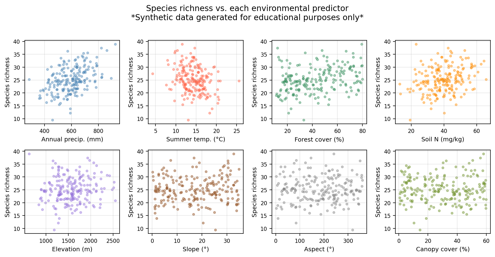
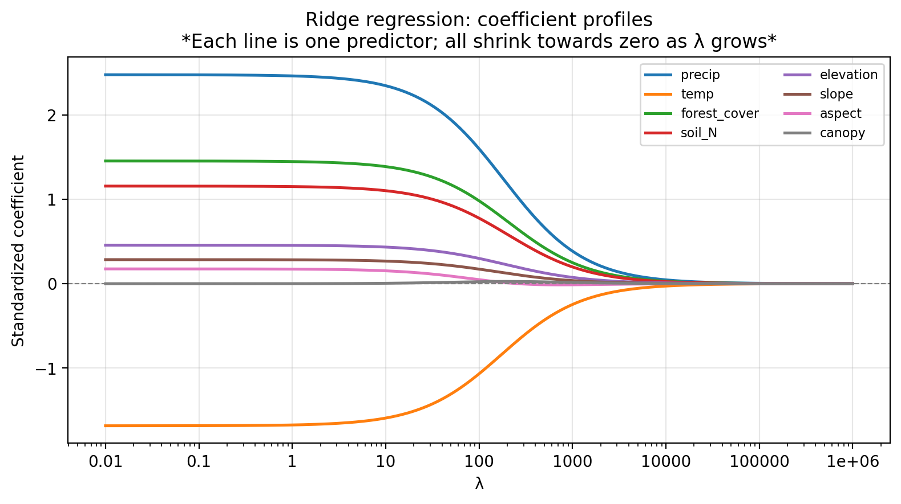
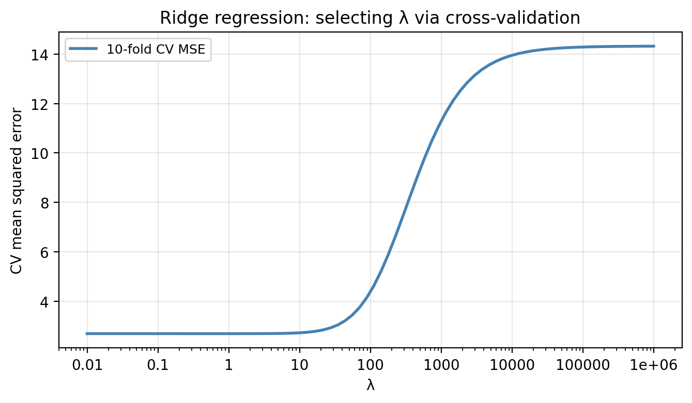
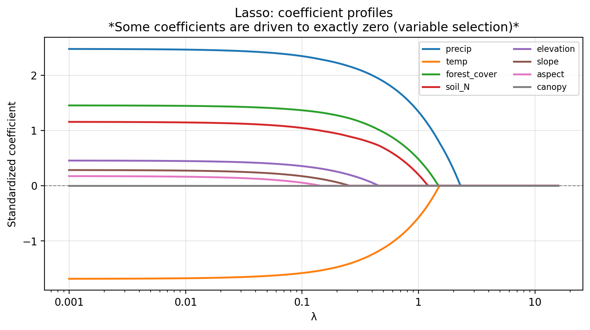
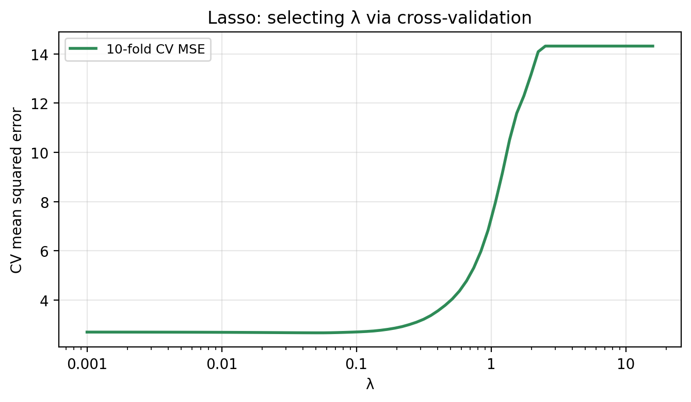

Linear model selection and regularization
In this lesson we introduce:
- The problem of variable selection in multiple linear regression
- Three common variable search strategies: forward, backward, and mixed selection
- Shrinkage methods as an alternative approach: instead of searching for the best subset, we constrain the coefficient estimates to reduce model complexity and variance
- Ridge regression
- The lasso
- How to use cross-validation to select the tuning parameter \(\lambda\) for both methods
These notes are based on chapters 6.1–6.2 of An Introduction to Statistical Learning with Applications in Python (James et al. 2023). The example data is synthetic and was generated with the aid of Claude Code for the purpose of this lesson.
A guiding example: meadow plant diversity
In this lesson we use a synthetic dataset representing 200 survey plots in a mountain national park. For each plot we record:
precip— mean annual precipitation (mm); higher precipitation typically promotes plant diversitytemp— mean summer temperature (°C); extreme heat can suppress richnessforest_cover— surrounding forest cover (%); edge habitat can increase local diversitysoil_N— soil nitrogen content (mg/kg); a key nutrient for plant growthelevation— elevation (m); diversity often peaks at intermediate elevationsslope— terrain slope (degrees); steep slopes may limit richnessaspect— terrain aspect (degrees, 0–360); a compass direction with no consistent linear effectcanopy— canopy cover (%); a structural variable not directly tied to richness in this scenario
The response variable is species_richness: the number of vascular plant species recorded in a 25 m² plot.
The central question is: which environmental factors actually drive plant species richness, and can we build a model that generalizes to new plots?
We have 8 potential predictors and a continuous response. Using all 8 predictors in a multiple linear regression is one option, but not all of them may be informative. The goal of this lesson is to explore principled ways to select predictors or constrain the model.
Variable selection
Once we decide to use multiple linear regression we follow the steps:
- Fit the model
- Compute the \(F\)-statistic and its \(p\)-value
- Check individual \(p\)-values for predictors.
If there is evidence that some predictors are associated with the response, an important question is: which predictors should we include in the model? This is called variable selection. Including unnecessary predictors does not help predictions and increases variance; leaving out important ones biases our estimates.
Best subset selection
A natural but computationally expensive approach is best subset selection: fit all \(2^p\) possible models and choose the one with the lowest RSS, where
\[RSS = \sum_{i=1}^{n}(y_i - \hat{y}_i)^2.\]
For \(p = 8\) that is already 256 models; for even moderate \(p\) (say, 30 or 40) exhaustive search is completely infeasible. The three automated approaches below are practical alternatives.
Forward selection
Start with the simplest model and build up:
- Start with the null model: only an intercept, no predictors.
- Fit \(p\) simple regressions (one per predictor) and add the predictor that results in the lowest RSS.
- Fit all two-variable models that include the predictor chosen in step 2, and add the next predictor that gives the lowest RSS.
- Continue adding predictors until a stopping criterion is met (e.g., no remaining predictor produces a statistically significant improvement).
Forward selection is always applicable, but it might include variables early that later become redundant.
Backward selection
Start with the most complex model and simplify:
- Start with the full model: the MLR with all \(p\) predictors included.
- Remove the predictor with the largest \(p\)-value (least statistically significant).
- Refit the model with the remaining \(p - 1\) predictors and repeat.
- Stop when all remaining predictors are significant at the chosen threshold.
Backward selection cannot be used when \(p > n\) (more predictors than observations), because the full model cannot be fit.
Mixed selection
Mixed selection combines the forward and backward approaches to avoid their respective limitations:
- Start with the null model.
- Forward step: add the variable that most improves the model (largest reduction in RSS).
- Backward step: after each addition, check if any currently included variable now has a \(p\)-value above the removal threshold. Adding a new variable can sometimes make a previously added one redundant. If so, remove it.
- Continue alternating forward and backward steps until no variables are added or removed.
This addresses the main limitation of forward selection: a variable added early can become unnecessary once other variables are included. Mixed selection allows such variables to be dropped rather than staying in the model indefinitely.
Check-in
For our example data, consider the three predictors precip, temp, and forest_cover. There are \(2^3 = 8\) possible subsets. The table below shows the RSS for every possible model:
Predictors in model RSS
(intercept only) 2852.1
precip 1804.1
temp 2438.4
forest_cover 2403.4
precip + temp 1250.6
precip + forest_cover 1385.7
temp + forest_cover 1966.4
precip + temp + forest_cover 808.3Using the table above, manually trace through the three steps of forward selection:
- Step 1 — Start with the null model. Which single predictor gives the largest reduction in RSS? What is the RSS after adding it?
- Step 2 — With that predictor already in the model, which one would be added in second place?
- Step 3 — Adding the final predictor, does it meaningfully reduce the RSS? What criterion could help you decide?
Discussion
Step 1: Comparing the three single-predictor models,
precipgives the lowest RSS. Forward selection addsprecipfirst, consistent with precipitation being the strongest true driver in the data-generating model (\(\beta = 2.5\)).Step 2: With
precipalready included, we compareprecip + tempandprecip + forest_cover. Theprecip + tempmodel has the lower RSS, sotempis added second (\(\beta = -1.8\) in the true model).Step 3: Adding
forest_coverreduces the RSS further. Whether to include it depends on the stopping criterion: a formal significance test, a minimum RSS improvement threshold, or an information criterion such as adjusted \(R^2\) (see below). If we use adjusted \(R^2\) and the improvement is negligible, we might stop at the two-predictor model.
Forward and backward selection can be run using metrics other than RSS. Using raw RSS as the sole criterion would always favor adding more predictors (RSS can only decrease or stay the same when a predictor is added). An alternative that penalizes model complexity is the adjusted \(R^2\):
\[\bar{R}^2 = 1 - \frac{RSS/(n-p-1)}{TSS/(n-1)}\]
Unlike \(R^2\), the adjusted \(R^2\) can decrease when adding a predictor that does not improve the fit enough to justify the added complexity.
Shrinkage methods
The variable selection strategies above search over subsets of predictors, choosing some to keep and discarding the rest. There is a fundamentally different approach: rather than searching for a good subset, we can alter the fitting method itself so that it naturally shrinks less important predictors towards zero.
Check-in
In the linear model
\[Y = \hat{\beta}_0 + \hat{\beta}_1 X_1 + \cdots + \hat{\beta}_p X_p,\]
how would you “remove” the variable \(X_i\) by changing the coefficient estimates?
Discussion
Set \(\hat{\beta}_i = 0\). The contribution of \(X_i\) to the predicted value is \(\hat{\beta}_i X_i = 0 \cdot X_i = 0\), so \(X_i\) has no effect on the predictions — equivalent to removing it from the model.
The idea is then to fit a model with all \(p\) predictors using a method that shrinks the coefficient estimates towards zero. This is called regularization (or constraining).
Instead of minimizing the RSS alone, regularization minimizes a penalized objective:
\[\text{minimize} \quad (RSS + \text{penalty})\]
The penalty term is a function of the coefficients that grows as they move away from zero. This constrains the size of the coefficients: they can only grow if accompanied by a sufficient reduction in RSS. The penalty also takes the number of predictors into account, discouraging complexity.
We will study two regularization methods that differ in how they define the penalty: ridge regression and the lasso.
Ridge regression
In ridge regression the coefficients are estimated by minimizing
\[RSS + \underbrace{\lambda \sum_{j=1}^{p} \beta_j^2}_{\text{penalty}},\]
where \(\lambda \geq 0\) is a tuning parameter that is determined separately (e.g., by cross-validation).
The shrinkage penalty \(\lambda \sum_j \beta_j^2\) is small when \(\beta_1, \ldots, \beta_p\) are close to zero, so it has the effect of pulling the estimates of \(\beta_j\) towards zero. The tuning parameter \(\lambda\) controls the relative weight of the RSS and the penalty on the final coefficient estimates.
- When \(\lambda = 0\), the penalty has no effect and the estimates are the same as ordinary least squares.
- As \(\lambda \to \infty\), the penalty dominates and all coefficients are forced towards zero.
Ridge will include all \(p\) predictors in the final model. The ridge penalty \(\lambda \sum_j \beta_j^2\) will only shrink all coefficients towards zero but will not set any of them to exactly zero.
Standardizing predictors before ridge regression
Ridge regression coefficients can change substantially when a predictor is multiplied by a constant (e.g., converting precipitation from mm to cm), because the penalty \(\lambda \sum_j \beta_j^2\) treats all \(\beta_j\) on the same footing. It is therefore important to standardize each predictor before fitting:
\[\tilde{x}_{ij} = \frac{x_{ij}}{\sqrt{\frac{1}{n}\sum_{i=1}^{n}(x_{ij} - \bar{x}_j)^2}}\]
so that all predictors are on the same scale (mean 0, standard deviation 1) and the penalty applies equally to each one.
The figure below shows how the standardized ridge regression coefficients change as \(\lambda\) increases.

Check-in
Which predictors appear to be the most important (largest absolute coefficient at low \(\lambda\)) in the coefficient profile above?
Suppose you have fit ridge regression at a grid of \(\lambda\) values and obtained a different set of coefficient estimates for each. What method could you use toselect a good value of \(\lambda\)?
Discussion
precip,temp,forest_cover, andsoil_Nhave the largest magnitudes at low \(\lambda\), so they appear to be the most important predictors.aspectandcanopyseem to be irrelevant as they stay near zero across the entire range.Use \(k\)-fold cross-validation:
For each candidate \(\lambda\) in a grid (e.g., \(10^{-3}\) to \(10^6\) on a log scale), fit ridge regression on the training folds and compute the mean squared error (MSE) on the held-out fold.
Average the MSE across all \(k\) folds to get the CV-MSE for that \(\lambda\).
Select the \(\lambda\) that minimizes the CV-MSE. This is the value that produces the best out-of-sample prediction accuracy.
Importantly, the test set should not be used to select \(\lambda\) — it should only be used for final evaluation after \(\lambda\) has been chosen via cross-validation on the training data.
Selecting the tuning parameter
As noted above, \(\lambda\) is chosen by cross-validation. The figure below shows the 10-fold CV mean squared error as a function of \(\lambda\) for ridge regression on the EcoRich data.

At very small \(\lambda\) the model is close to OLS and may overfit; at very large \(\lambda\) the model is too constrained and underfits. The optimal \(\lambda\) balances these two extremes.
The lasso
In the lasso, the coefficients are estimated by minimizing
\[RSS + \underbrace{\lambda \sum_{j=1}^{p} |\beta_j|}_{\text{penalty}}.\]
The only difference from ridge is that the penalty uses the absolute value of the coefficients (\(\ell_1\) norm) rather than their squares (\(\ell_2\) norm). This seemingly small change has a dramatic consequence: the lasso penalty has the effect of forcing some coefficient estimates to be exactly equal to zero when the tuning parameter \(\lambda\) is sufficiently large.
Lasso performs simultaneous shrinkage and variable selection: the \(\ell_1\) penalty drives some coefficients to exactly zero. Because it produces sparse models (models that use only a subset of the predictors) the lasso effectively performs variable selection as part of the fitting process.
As with ridge regression, the predictors should be standardized before fitting the lasso so that the penalty applies equally to all coefficients.
Check-in
- If \(\lambda = 0\), how are the lasso coefficient estimates related to the least squares estimates?
- What happens to all the lasso coefficients when \(\lambda\) is very large?
Discussion
- When \(\lambda = 0\) there is no penalty term, so minimizing \(RSS + 0 \cdot \sum |\beta_j|\) is the same as minimizing the RSS alone. The lasso estimates equal the ordinary least squares estimates.
- As \(\lambda \to \infty\) the penalty term dominates and forces all coefficients to exactly zero. The model reduces to the null model (intercept only), predicting the mean response for every observation.
The figure below shows how the standardized lasso coefficients change as \(\lambda\) increases for our example data.

Check-in
Based on the lasso coefficient profile plot. Which predictors are driven to exactly zero first as \(\lambda\) increases?
Discussion
aspect and canopy are driven to exactly zero at the smallest \(\lambda\) values, followed by slope. As \(\lambda\) increases from left to right, you can see these lines flatten to zero and stay ther. This is a distinctive feature of the lasso.
The lasso tuning parameter is selected by cross-validation in the same way as for ridge regression: fit the model at many \(\lambda\) values, compute CV-MSE at each, and select the \(\lambda\) that minimizes it.

Comparing lasso and ridge
Neither method consistently outperforms the other:
- Prefer lasso when the response is believed to depend on a small number of strong predictors (sparse setting). The resulting model is sparser and easier to interpret.
- Prefer ridge when the response is a function of many predictors, each contributing a roughly equal amount. Ridge will outperform lasso in this dense setting because lasso may incorrectly discard informative predictors.
In practice, the number of truly relevant predictors is never known in advance for real data. Cross-validation can be used to compare both approaches and select the one with lower CV-MSE on held-out data.
Check-in
Looking at the coefficient comparison table below:
Predictor True β OLS Ridge (CV λ) Lasso (CV λ)
precip 2.50 2.475 2.464 2.409
temp -1.80 -1.684 -1.676 -1.631
forest_cover 1.50 1.453 1.447 1.409
soil_N 1.00 1.156 1.151 1.100
elevation 0.50 0.456 0.454 0.405
slope 0.15 0.285 0.283 0.228
aspect 0.00 0.175 0.173 0.114
canopy 0.00 -0.000 0.000 -0.000- How do the ridge and lasso estimates compare to the true coefficients for
precip,temp,forest_cover, andsoil_N(the four predictors with the largest true effects)? - What has the lasso done to
aspectandcanopy, the two truly irrelevant predictors? What has ridge done? - In which setting — sparse true model or dense true model — would you expect lasso to outperform ridge? Why?
Discussion
Both ridge and lasso shrink the estimates towards zero relative to OLS, but they recover the correct ranking of importance (precip, then temp, then forest_cover, then soil_N). The signs are correct for all four.
The lasso has set both
aspectandcanopyto exactly zero — correctly identifying them as irrelevant. Ridge has kept both in the model with small (but non-zero) coefficients.Lasso performs better in a sparse setting — when only a few predictors truly matter. By setting irrelevant coefficients to zero, it reduces model complexity and avoids fitting noise. In a dense setting (many predictors each with a small but real effect), lasso may incorrectly zero out informative predictors and ridge tends to be more accurate because it keeps all coefficients while shrinking them proportionally.
References
James, Gareth, Daniela Witten, Trevor Hastie, Robert Tibshirani, and Jonathan E. Taylor. 2023. An Introduction to Statistical Learning: With Applications in Python. Springer Texts in Statistics. Cham: Springer.